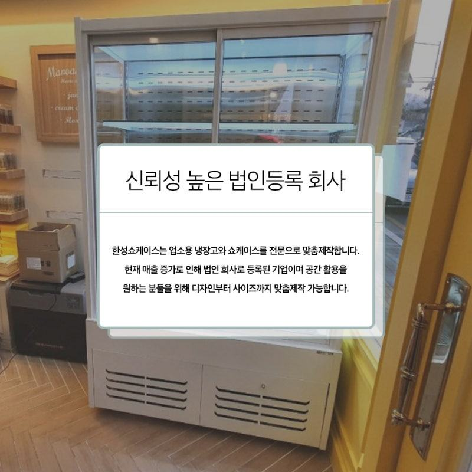
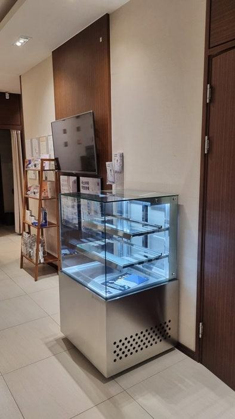

한성제품
편의점 폐기 줄이는 법, 쇼케이스 온도와 진열 순서부터

편의점 폐기를 줄이려면 발주량을 맞추는 것과 함께, 쇼케이스 안의 실제 온도를 확인하고 유통기한이 짧은 상품을 앞으로 빼는 선입선출을 지키는 것이 기본입니다. 냉기 토출구를 막지 않는 진열과 온장고·냉장 쇼케이스의 칸별 온도 점검만 해도 기한 전에 상하는 상품을 꽤 줄일 수 있습니다.
안녕하세요. 편의점과 소형 마트의 냉장·온장 쇼케이스를 매장 크기에 맞춰 만드는 한성쇼케이스입니다.
편의점 점주님들의 가장 큰 고민 중 하나가 폐기입니다. 도시락, 김밥, 샌드위치, 유제품처럼 기한이 짧은 상품은 조금만 덜 팔려도 그대로 버려야 하니까요.
그래서 대부분 발주량부터 조절하시는데, 발주만으로는 줄지 않는 폐기도 있습니다.
기한이 남았는데 포장 안에 물이 맺히거나, 우유가 기한보다 먼저 맛이 변해 손님이 반품하러 오는 경우입니다.
이런 폐기는 대부분 쇼케이스 안의 온도와 진열 방식에서 생깁니다.
오늘은 편의점 폐기를 줄이기 위해 매장 쇼케이스에서 점검할 것과, 진열 순서를 어떻게 잡으면 좋은지 정리해 드리겠습니다.
1. 표시 온도와 실제 온도는 다를 수 있습니다
쇼케이스 온도 표시는 보통 센서가 있는 한 지점의 온도입니다. 그런데 실제로는 맨 위 칸과 맨 아래 칸, 앞줄과 안쪽의 온도가 다를 수 있습니다.
특히 오픈형 쇼케이스는 앞줄이 매장 공기의 영향을 많이 받습니다.
작은 온도계를 칸마다 놓고 하루 중 손님이 몰리는 시간과 한가한 시간에 한 번씩 확인해 보세요. 유독 따뜻한 칸이 있다면 그 칸에는 기한이 짧은 상품 대신 상대적으로 덜 예민한 상품을 두는 것만으로도 폐기가 줄어듭니다.
- 칸마다 온도계를 두고 시간대별로 확인하세요.
- 따뜻한 칸에는 덜 예민한 상품을 두세요.
2. 선입선출 진열을 습관으로
새로 들어온 상품을 앞에 놓으면 손님은 당연히 앞에 있는 것을 집어 가고, 안쪽의 기한 임박 상품은 그대로 남아 폐기가 됩니다.
입고 때마다 기존 상품을 앞으로 빼고 새 상품을 뒤에 넣는 순서를 지켜 주세요.
근무자가 여러 명이라면 진열 순서를 매장 규칙으로 정해 두시는 게 좋습니다. 선반이 깊어 뒤쪽까지 손이 잘 닿지 않는다면 이 순서가 무너지기 쉬우니, 쇼케이스를 고를 때 선반 깊이도 함께 보셔야 합니다.
야간이나 새벽 입고 때 상품을 상온에 오래 두는 것도 기한 전 변질의 원인입니다. 입고 박스가 들어오면 냉장 상품부터 바로 쇼케이스나 워크인에 넣고, 검수는 그다음에 하는 순서로 바꿔 보세요.
몇 분 차이 같아도 여름철에는 포장 안 결로와 맛 변화로 이어집니다.


3. 냉기 흐름을 막지 않는 진열
많이 진열하려고 상품을 선반 끝까지 꽉 채우거나 위 칸 높이까지 쌓으면 냉기 토출구와 흡입구가 막혀 칸 전체 온도가 올라갑니다.
앞쪽 가격표 레일 위로 상품이 튀어나오지 않게 하고, 위쪽에 바람이 지나갈 틈을 남겨 주세요.
음료 박스를 쇼케이스 바닥이나 앞에 쌓아 두는 것도 흡입구를 막는 흔한 원인입니다. 마감 후 오픈형 쇼케이스에는 나이트커버를 내려 밤사이 냉기가 덜 빠지게 해 주세요.
- 적재 높이와 토출구·흡입구 앞을 확인하세요.
- 쇼케이스 앞에 박스를 쌓지 마세요.
4. 온장 상품도 폐기의 원인
겨울철 캔커피, 두유, 즉석 음료처럼 온장고에 넣는 상품도 너무 오래 데우면 맛과 품질이 변합니다. 온장고 안의 상품도 선입선출로 돌리고, 한꺼번에 많이 넣어 두기보다 판매량에 맞춰 나눠 넣으세요.
온장고는 단 수와 온도 조절부 위치, 문 여닫는 방향에 따라 쓰기 편한 정도가 달라집니다. 간접등으로 LED를 넣으면 손님 눈에 잘 띄어 오래 남는 상품이 줄어드는 데도 도움이 됩니다.
체크리스트
- 칸별 실제 온도
- 따뜻한 칸의 상품 배치
- 선입선출 진열 규칙
- 적재 높이와 토출구 막힘
- 마감 후 나이트커버
- 온장 상품 회전
작은 편의점 구조에 맞춰 제작한 온장고 사례
소형 편의점은 공간을 최대한 써야 해서, 규격과 사이즈가 균일한 기성 온장고를 원하는 자리에 넣기 어려운 경우가 많습니다.
설치는 했지만 인테리어와 어울리지 않거나 동선을 막는다는 고민도 자주 듣습니다.
그래서 매장 구조에 맞춰 규격, 크기, 디자인을 정하고 원하시는 단 개수, 온도 조절부 위치, 문 여는 방향까지 반영해 온장고를 제작하고 설치까지 진행했습니다.
상품이 잘 보이도록 간접등 LED도 넣었습니다. 공장에 직접 오셔서 샘플을 보며 상담하실 수도 있습니다.




자주 묻는 질문
쇼케이스 설정 온도를 더 낮추면 폐기가 줄까요?
너무 낮추면 일부 상품이 얼거나 결로가 생겨 오히려 상품성이 떨어질 수 있습니다. 설정값을 바꾸기 전에 칸별 실제 온도와 진열 상태부터 확인해 보세요.
오픈형과 도어형 중 폐기 관리에 유리한 건 어느 쪽인가요?
도어형이 온도 유지에는 유리하고, 오픈형은 손님이 집기 편해 회전이 빠릅니다. 기한이 짧은 상품 비중과 매장 동선을 함께 보고 정하시는 게 좋습니다.
쇼케이스 온도가 칸마다 너무 다르면 고장인가요?
진열 막힘이나 문 패킹 문제일 수도 있고 냉각 부품 문제일 수도 있습니다. 진열을 정리해도 차이가 크다면 전국 240여 개 A/S 센터를 통해 점검을 받아 보세요.
매장 조건에 맞춰 만드는 한성쇼케이스
원하시는 제품 사진과 설치할 공간 사진만 보내 주셔도 매장에 맞는 구성을 추천해 드립니다.
- 전국 240여 개 A/S 전담 센터 운영
- 본사 대량 자재 매입으로 품질 대비 합리적인 가격
- 유럽제·삼성 냉각 콤프레셔 적용
- 국내 최초 쇼케이스 전문 디자이너 상주
매장 폭과 원하는 진열 구성을 알려 주세요. 실측과 견적을 안내해 드립니다.
031-986-2458